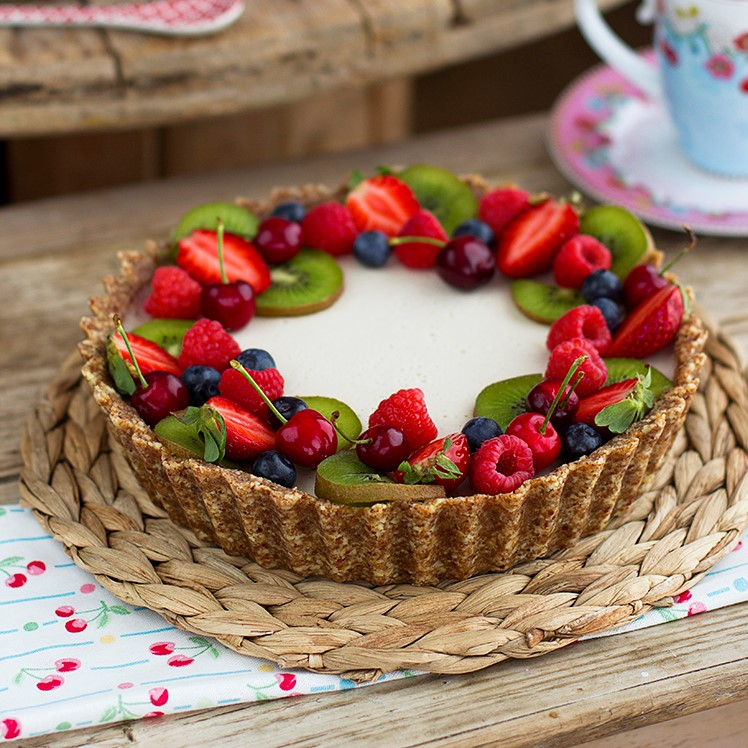
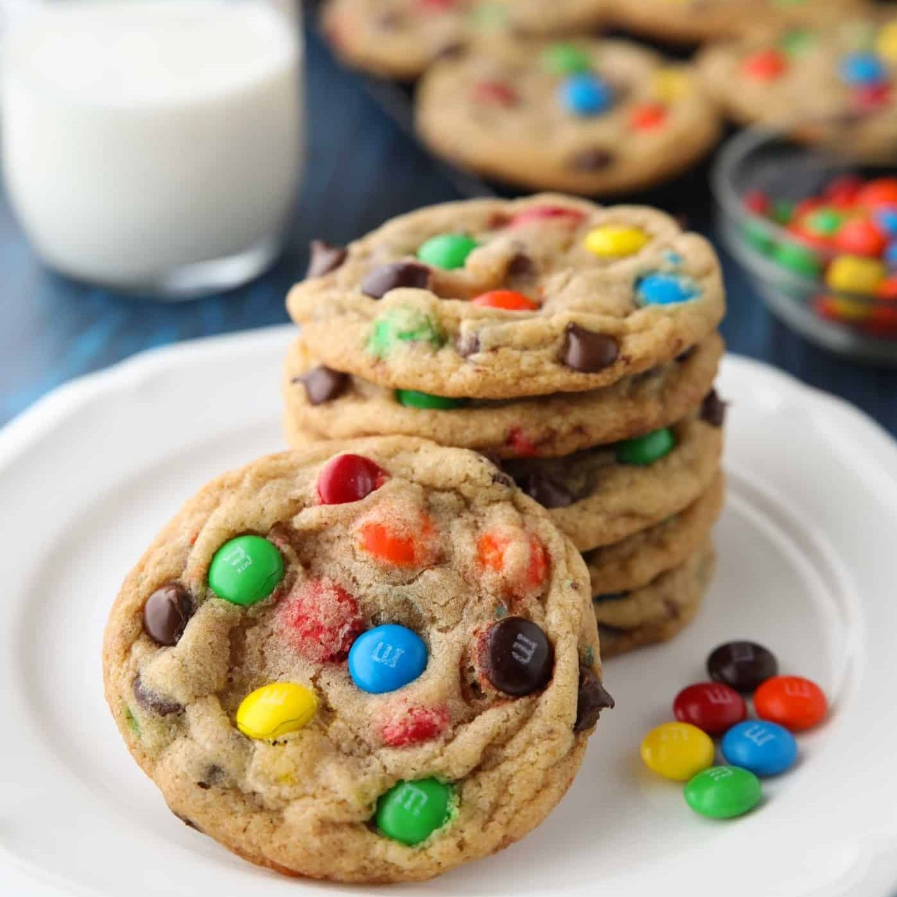
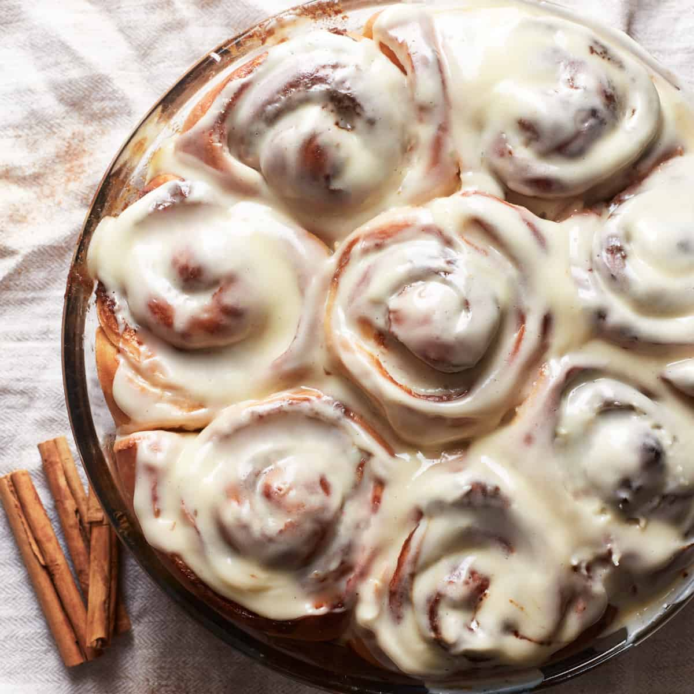

Va llegando el calorcito y va apeteciendo nuevas delicias dulces que se puedan hacer sin necesidad de horno. Me encanta la combinación de vainilla y fruta fresca, y tenía muchas ganas de ver como funciona el agar-agar en las tartas porque aunque no te lo creas, no lo había usado nunca.
Las galletas son uno de los dulces fa-voritos de los niños, galletas hay miles de recetas, galletas de jengibre, galletas con chispas de chocolate, de avena, de mantequilla… pero una de las que más gustan a los niños son éstas que os explicamos ahora: las galletas de M&M’s, lacasitos o cualquier caramelo similar relleno de chocolate. Así que no lo penséis, poneos los delantales y a cocinar con los niños unas deliciosas galletas…
Queda bautizado por todos los tiempos, estos Cinnamon Rolls son los mejores que jamás he probado y te lo digo una catadora oficial de estos rollitos, mi vida en reposteria empezó en querer conseguir esta receta…aunque no te lo creas..ha sido una verdadera obsesión y he hecho en mi vida mil veces y puedo darte la seguridad que esta receta es para mi la definitiva que haré por el resto de mi vida.
Ya puedes llenar de amor a tus seres queridos con un Korean cake hecho por ti, y lo mejor es que lo puedes hacer en casa. Las tendencias en pastelería evolucionan constantemente, es por eso que pasamos del fondant a los vintage cakes y ahora lo que está revolucionando el mercado de todos los postreros de corazón son los Korean cake o bento box cake. Estos pastelitos súper ‘cute’ son perfectos para comer solos, además son el regalo perfecto para quedar bien con tus amigos, o pareja. ¡Olvídate de los procesos engorrosos, donde tenías que hacer miles de frostings y complicadas cubiertas de fondant! lo de ahora es un pan esponjosito, una crema de queso ligera y mucha imaginación.